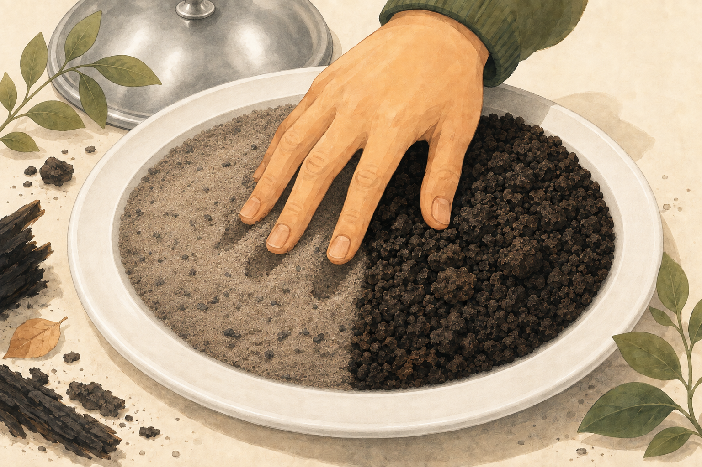
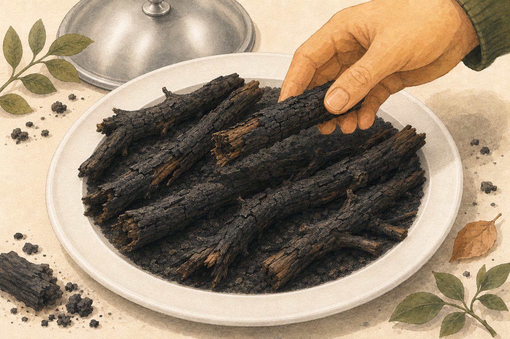
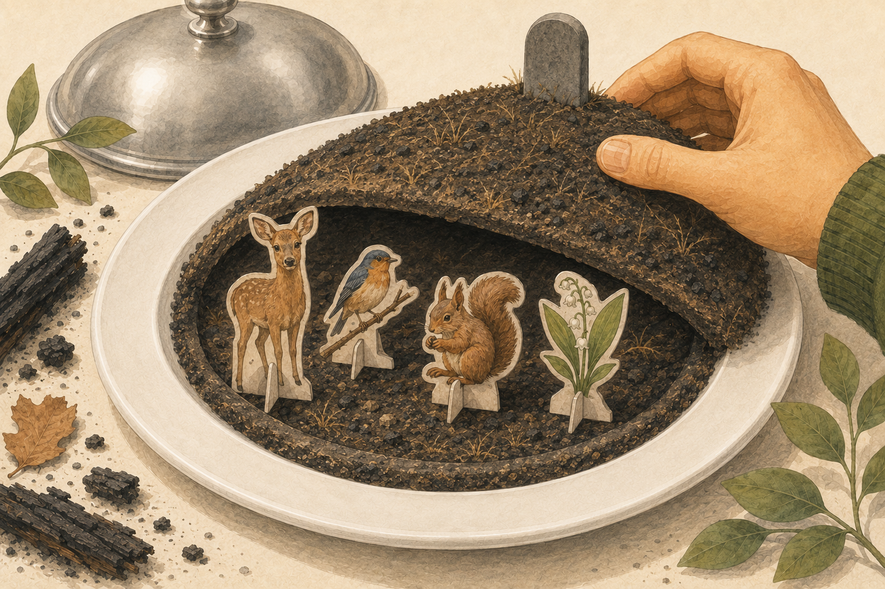
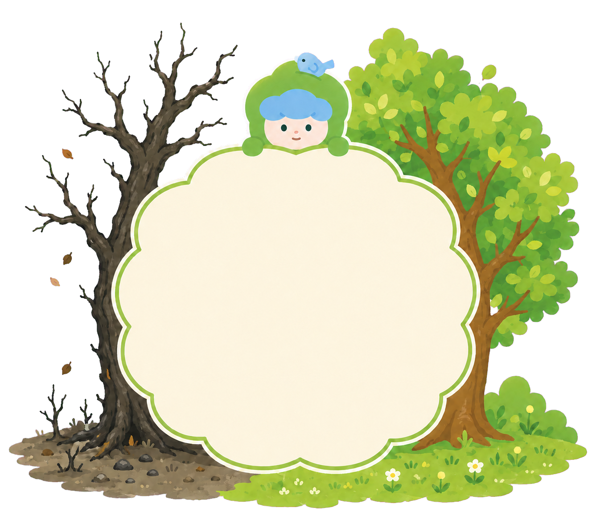
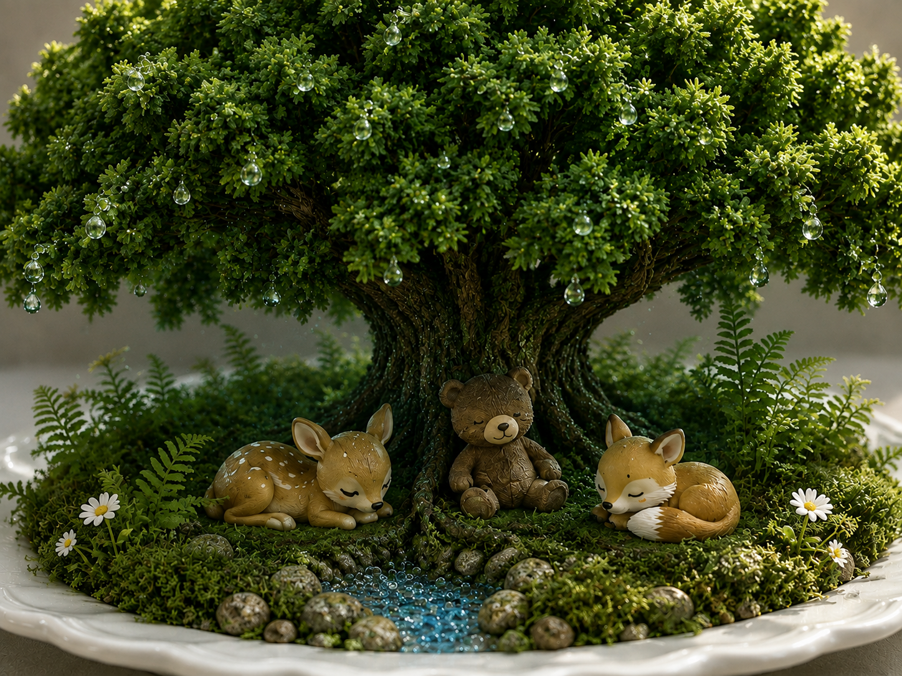
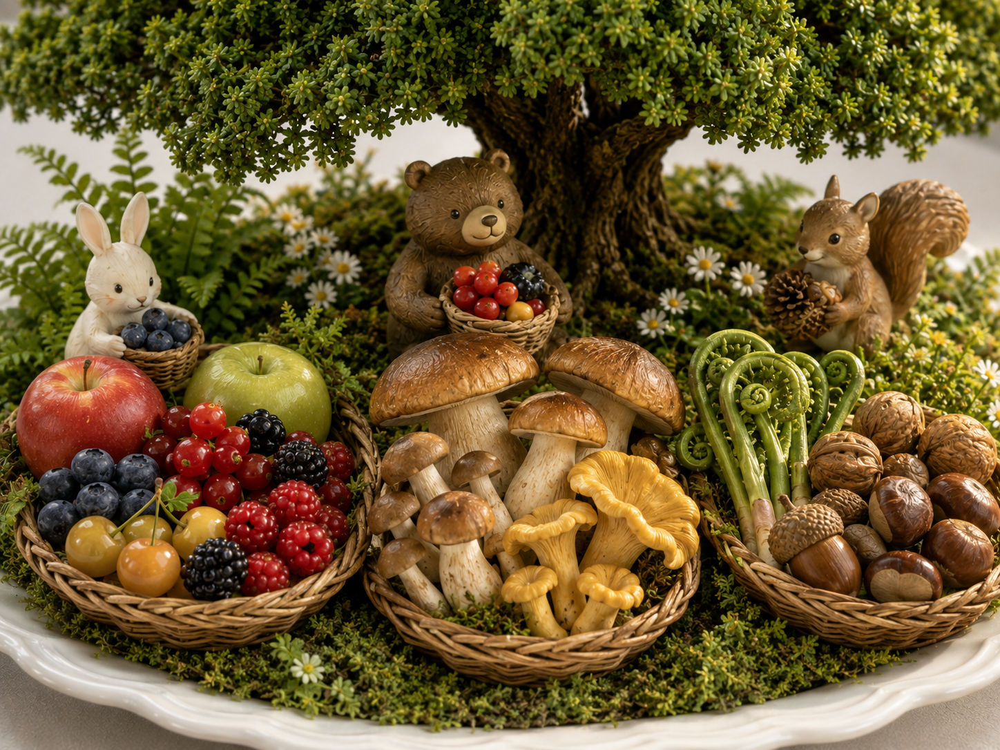
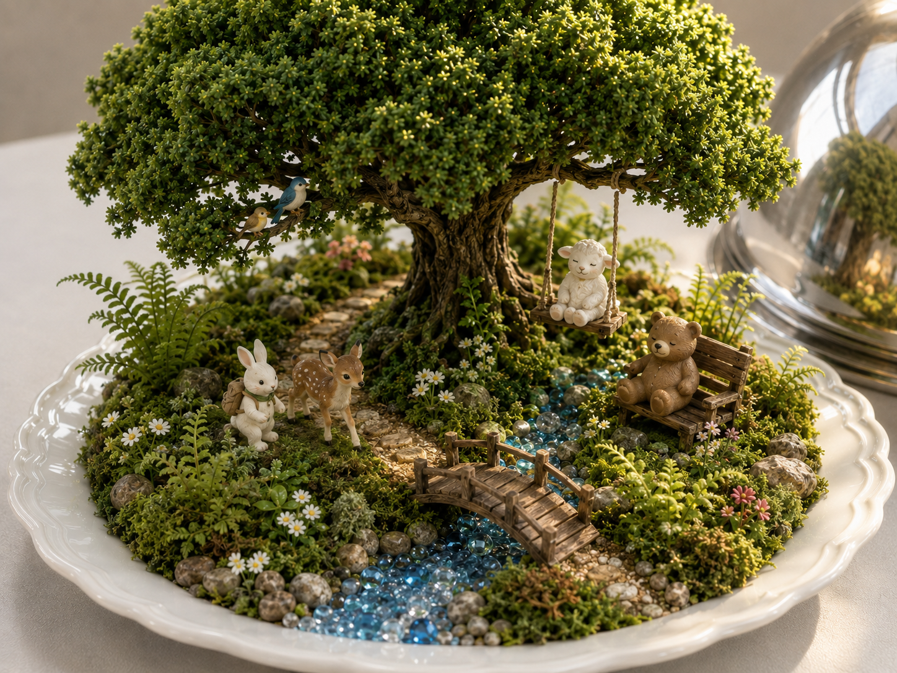

🟫 타버린 흙 🟫

산불로 인해 타버린 흙 2종류의 촉감을 직접 만져 느껴보세요! 타버린 흙은 영양분이 없어 식물들이 살기 촉박한 환경이 됩니다.

산불로 인해 타버린 흙 2종류의 촉감을 직접 만져 느껴보세요! 타버린 흙은 영양분이 없어 식물들이 살기 촉박한 환경이 됩니다.

산불로 인해 타버린 나뭇가지의 촉감을 직접 만져 느껴보세요! 나무 탄 내도 느낄 수 있어요! 불에 탄 나무는 언제 쓰러질지 몰라 위험하답니다.

산불로 인해 죽은 동식물들의 무덤입니다. 무덤을 열어보세요! 산불로 인해 죽은 동식물 사진을 확인해볼 수 있어요! 울진, 동해 대형산불로 인해 많은 천연기념물인 산양이 죽었고, 금강소나무 등 많은 토종 식물이 죽었답니다.

방금 보신 타버린 흙과 나무, 무덤 속 동식물..
이들이 사라진 건 단순히 마음 아픈 일로 끝나지 않아요.
🔑그렇다면, 숲은 우리에게 왜 이렇게 소중한 존재일까요?🔑
🍝 두 번째 본식을 공개합니다! 🍝

숲이 주는 시원함을 느껴보세요! 울창한 나무 그늘은 땅과 사람에게 닿는 태양열을 줄여 줍니다. 그리고 뿌리로 흡수한 물을 잎에서 수증기로 방출하는 ‘증산작용’이 일어나는데, 이때 주변의 열을 흡수해 공기가 시원해집니다. 또한 도심에서는 열섬 현상을 완화시켜 폭염도 예방해준답니다!

숲은 우리에게 풍부한 먹거리를 제공한답니다! 숲에서 채집할 수 있는 식물은 약 7000여 종, 식용 버섯은 약 2100여 종이 있다고 합니다. 이렇듯 숲이 보존되어야만 우리 식탁의 먹거리들을 지킬 수 있답니다!

숲은 동식물과 함께하는 힐링의 공간입니다. 푸른 풍경과 자연의 소리는 지친 뇌에 휴식을 주고, 숲속을 걷는 동안 스트레스 호르몬과 몸의 긴장이 줄어듭니다. 숲은 우리의 불안과 피로를 덜어 주고 몸과 마음이 다시 안정을 찾도록 도와줍니다.